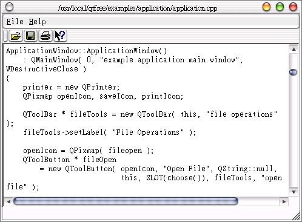

| 接下來要介紹的這個程式是Qt的線上範例application，這個範例雖然程式碼很長，但大部份的元件我們都已經介紹過了，只要逐步拆解程式碼，相信也可以瞭解它的內容。 要觀看Qt的線上範例，最重要的就是瞭解它的定義檔的內容，即application.h：
#ifndef APPLICATION_H 這個程式繼承QMainWindow類別，這是文字編輯器的標準外觀元件；接下來我們一段一段來看application.cpp中的程式碼： #include "application.h"
這些不用解釋了，就是include定義檔而已，接下來這些大部份都是在作版面配置，以及Signals - Slots之間的連接：#include <qimage.h> #include <qpixmap.h> #include <qtoolbar.h> #include <qtoolbutton.h> #include <qpopupmenu.h> #include <qmenubar.h> #include <qtextedit.h> #include <qfile.h> #include <qfiledialog.h> #include <qstatusbar.h> #include <qmessagebox.h> #include <qprinter.h> #include <qapplication.h> #include <qaccel.h> #include <qtextstream.h> #include <qpainter.h> #include <qpaintdevicemetrics.h> #include <qwhatsthis.h> #include "filesave.xpm" #include "fileopen.xpm" #include "fileprint.xpm" ApplicationWindow::ApplicationWindow()
: QMainWindow( 0, "example application main window", WDestructiveClose ) { printer = new QPrinter; QPixmap openIcon, saveIcon, printIcon; QToolBar * fileTools = new QToolBar( this, "file operations" ); fileTools->setLabel( "File Operations" ); openIcon = QPixmap( fileopen ); QToolButton * fileOpen = new QToolButton( openIcon, "Open File", QString::null, this, SLOT(choose()), fileTools, "open file" ); saveIcon = QPixmap( filesave ); QToolButton * fileSave = new QToolButton( saveIcon, "Save File", QString::null, this, SLOT(save()), fileTools, "save file" ); printIcon = QPixmap( fileprint ); QToolButton * filePrint = new QToolButton( printIcon, "Print File", QString::null, this, SLOT(print()), fileTools, "print file" ); (void)QWhatsThis::whatsThisButton( fileTools ); const char * fileOpenText = "<p><img source=\"fileopen\"> " "Click this button to open a <em>new file</em>.<br>" "You can also select the <b>Open</b> command " "from the <b>File</b> menu.</p>"; QWhatsThis::add( fileOpen, fileOpenText ); QMimeSourceFactory::defaultFactory()->setPixmap( "fileopen", openIcon ); const char * fileSaveText = "<p>Click this button to save the file you " "are editing. You will be prompted for a file name.\n" "You can also select the <b>Save</b> command " "from the <b>File</b> menu.</p>"; QWhatsThis::add( fileSave, fileSaveText ); const char * filePrintText = "Click this button to print the file you " "are editing.\n" "You can also select the Print command " "from the File menu."; QWhatsThis::add( filePrint, filePrintText ); QPopupMenu * file = new QPopupMenu( this ); menuBar()->insertItem( "&File", file ); file->insertItem( "&New", this, SLOT(newDoc()), CTRL+Key_N ); int id; id = file->insertItem( openIcon, "&Open...", this, SLOT(choose()), CTRL+Key_O ); file->setWhatsThis( id, fileOpenText ); id = file->insertItem( saveIcon, "&Save", this, SLOT(save()), CTRL+Key_S ); file->setWhatsThis( id, fileSaveText ); id = file->insertItem( "Save &As...", this, SLOT(saveAs()) ); file->setWhatsThis( id, fileSaveText ); file->insertSeparator(); id = file->insertItem( printIcon, "&Print...", this, SLOT(print()), CTRL+Key_P ); file->setWhatsThis( id, filePrintText ); file->insertSeparator(); file->insertItem( "&Close", this, SLOT(close()), CTRL+Key_W ); file->insertItem( "&Quit", qApp, SLOT( closeAllWindows() ), CTRL+Key_Q ); menuBar()->insertSeparator(); QPopupMenu * help = new QPopupMenu( this ); menuBar()->insertItem( "&Help", help ); help->insertItem( "&About", this, SLOT(about()), Key_F1 ); help->insertItem( "About &Qt", this, SLOT(aboutQt()) ); help->insertSeparator(); help->insertItem( "What's &This", this, SLOT(whatsThis()), SHIFT+Key_F1 ); e = new QTextEdit( this, "editor" ); e->setFocus(); setCentralWidget( e ); statusBar()->message( "Ready", 2000 ); resize( 450, 600 ); } ApplicationWindow::~ApplicationWindow() { delete printer; } 其中重要的部份有： // 在QToolBar中置入WhatsThis按鈕
(void)QWhatsThis::whatsThisButton( fileTools ); // 為fileSave按鈕置入WhatsThis說明 QWhatsThis::add( fileSave, fileSaveText ); 接下來就都是Slots的實作了： void ApplicationWindow::newDoc()
{ ApplicationWindow *ed = new ApplicationWindow; ed->setCaption("Qt Example - Application"); ed->show(); } 按下選單中的New選項會開啟一個新的視窗，這是SDI（Single Document Interface）應用程式的標準作法。 接下來實作，按下選單中的Open或工具列上的開啟圖示，就會顯示開啟檔案的對話方塊，選擇檔案後若開啟成功，就將檔案載入： void ApplicationWindow::choose()
{ QString fn = QFileDialog::getOpenFileName( QString::null, QString::null, this); if ( !fn.isEmpty() ) load( fn ); else statusBar()->message( "Loading aborted", 2000 ); } void ApplicationWindow::load( const QString &fileName ) { QFile f( fileName ); if ( !f.open( IO_ReadOnly ) ) return; QTextStream ts( &f ); e->setText( ts.read() ); e->setModified( FALSE ); setCaption( fileName ); statusBar()->message( "Loaded document " + fileName, 2000 ); } 按下Save或是工具列上的儲存按鈕時，檢查是否需另存新檔，例如無檔名（新開啟）、唯讀等等情況，否則就直接儲存檔案；按下Save as或檢查必須另存新檔案，就會執行saveAs()這個Slot方法： void ApplicationWindow::save()
printer->setup(this)
顯示列印對話方塊的設定畫面，印表機的列印準備是在印表機物件上進行繪圖，p.begin(printer)對印表機物件初始列印工作，接下來我們對繪圖
物件作一些字型與頁面大小的設定，由於我們是準備印表機列印，所以我們需要印表機的頁面大小資訊，這是QPaintDeviceMetrics
metrics( printer
)這行的作用，然後我們將編輯區域的文字一行一行畫到繪圖物件上，結束後告訴印表機，這是p.end()這行的作用，此時繪圖物件上的資訊會送至印表機開
始列印。 { if ( filename.isEmpty() ) { saveAs(); return; } QString text = e->text(); QFile f( filename ); if ( !f.open( IO_WriteOnly ) ) { statusBar()->message( QString("Could not write to %1").arg(filename), 2000 ); return; } QTextStream t( &f ); t << text; f.close(); e->setModified( FALSE ); setCaption( filename ); statusBar()->message( QString( "File %1 saved" ).arg( filename ), 2000 ); } void ApplicationWindow::saveAs() { QString fn = QFileDialog::getSaveFileName( QString::null, QString::null, this ); if ( !fn.isEmpty() ) { filename = fn; save(); } else { statusBar()->message( "Saving aborted", 2000 ); } } printer->newPage()是在檢查列印位置超出紙張時，另起一個新頁面來繼續列印： void ApplicationWindow::print()
{ // ###### Rewrite to use QSimpleRichText to print here as well const int Margin = 10; int pageNo = 1; if ( printer->setup(this) ) { // printer dialog statusBar()->message( "Printing..." ); QPainter p; if( !p.begin( printer ) ) // paint on printer return; p.setFont( e->font() ); int yPos = 0; // y-position for each line QFontMetrics fm = p.fontMetrics(); QPaintDeviceMetrics metrics( printer ); // need width/height // of printer surface for( int i = 0 ; i < e->lines() ; i++ ) { if ( Margin + yPos > metrics.height() - Margin ) { QString msg( "Printing (page " ); msg += QString::number( ++pageNo ); msg += ")..."; statusBar()->message( msg ); printer->newPage(); // no more room on this page yPos = 0; // back to top of page } p.drawText( Margin, Margin + yPos, metrics.width(), fm.lineSpacing(), ExpandTabs | DontClip, e->text( i ) ); yPos = yPos + fm.lineSpacing(); } p.end(); // send job to printer statusBar()->message( "Printing completed", 2000 ); } else { statusBar()->message( "Printing aborted", 2000 ); } } 當按下關閉鈕時，檢查看看編輯區域是否有修改過，如果有的話，詢問使用者是否儲存或另儲新檔： void ApplicationWindow::closeEvent( QCloseEvent* ce )
{ if ( !e->isModified() ) { ce->accept(); return; } switch( QMessageBox::information( this, "Qt Application Example", "Do you want to save the changes" " to the document?", "Yes", "No", "Cancel", 0, 1 ) ) { case 0: save(); ce->accept(); break; case 1: ce->accept(); break; case 2: default: // just for sanity ce->ignore(); break; } } 接下來這兩個Slots沒什麼，就是顯示「關於」的訊息方塊而已： void ApplicationWindow::about()
{ QMessageBox::about( this, "Qt Application Example", "This example demonstrates simple use of " "QMainWindow,\nQMenuBar and QToolBar."); } void ApplicationWindow::aboutQt() { QMessageBox::aboutQt( this, "Qt Application Example" ); } 最後別忘了主函式main.cpp：
#include <qapplication.h> 程式終於看完了，下圖是這個程式的執行結果畫面：  |
|